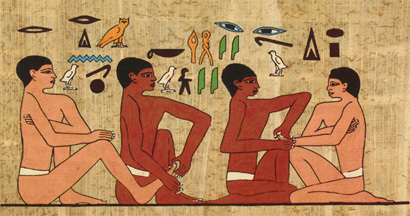

Historia refleksoterapii
Jest to przykra prawda, ale stopy – podstawa konstrukcji całego ciała – są często zapomniane przez nas w czasie codziennych zajęć. Czym dla roślin są korzenie, tym dla ciała powinny być stopy- równie ważne i zauważalne. Mimo wszystko, poświęcamy im za mało uwagi. Codzienna kosmetyka stóp znana już była w starożytnym Egipcie, czego dowiadujemy się z hieroglifów i rysunków ściennych wykonanych 2300 lat p.n.e., znalezionych m.in. w grobowcu Ankhmabora (najwyższego dostojnika dworu Faraona) grobowca znanego również jako grobowiec lekarski.
Tłumaczenie hieroglifu głosi „Nie skrzywdź mnie”, na co prowadzący zabieg odpowiada „Ja muszę postępować tak abyś mnie wynagrodził.”